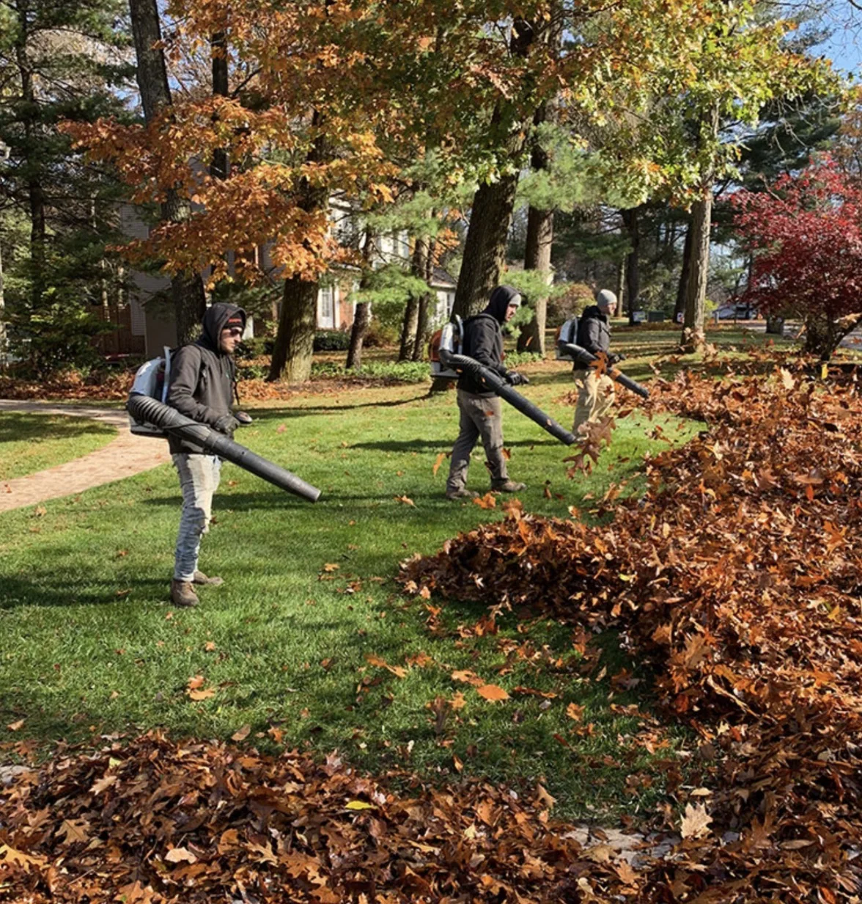
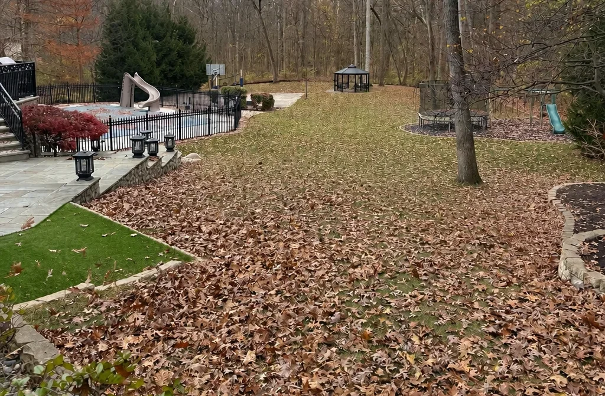
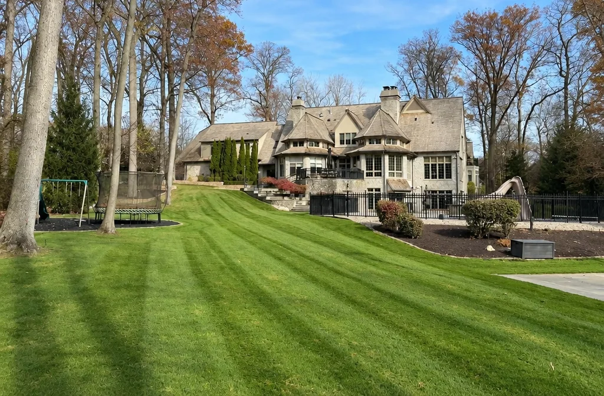
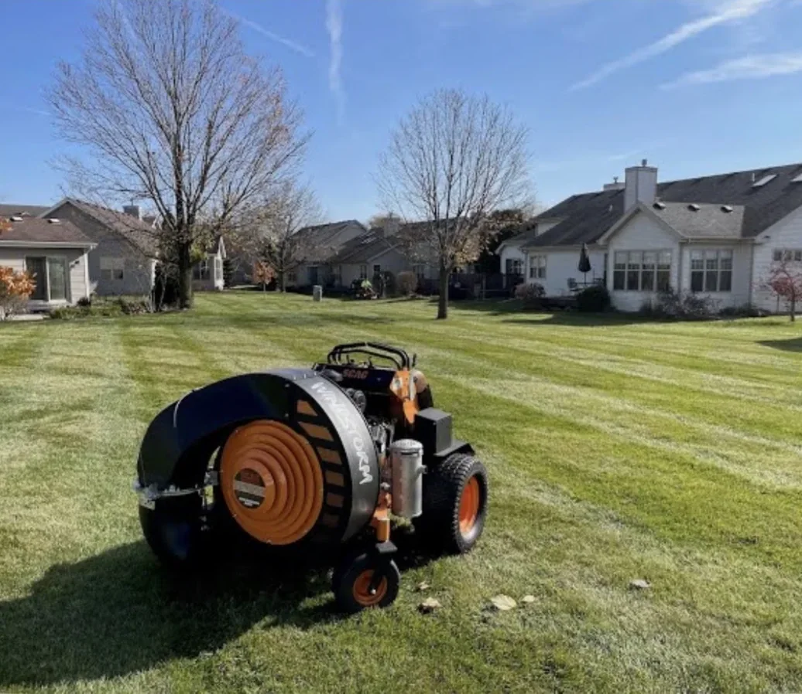
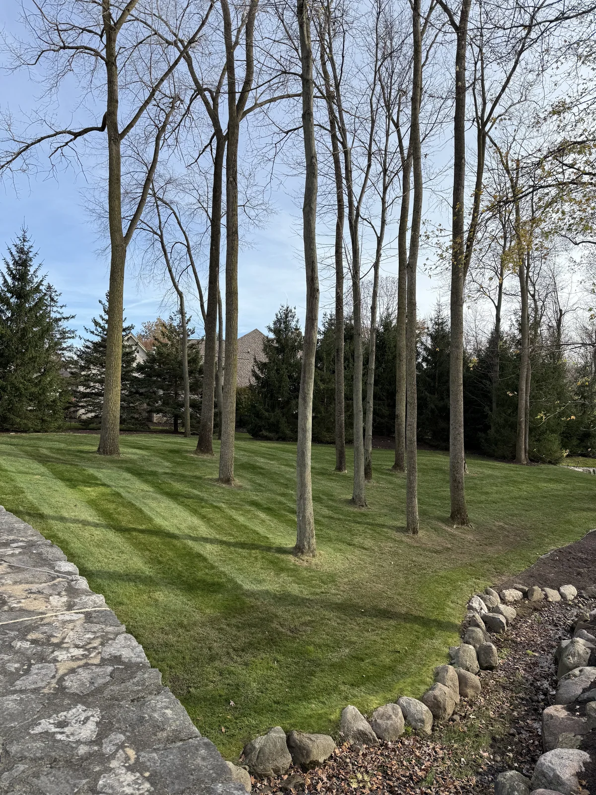
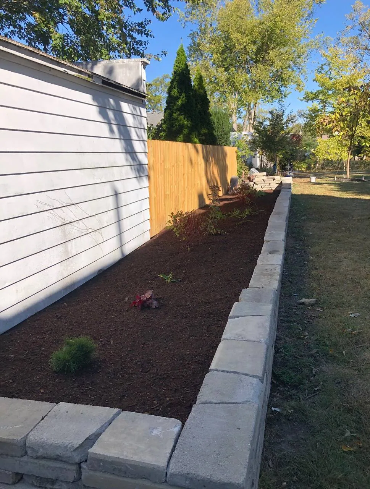
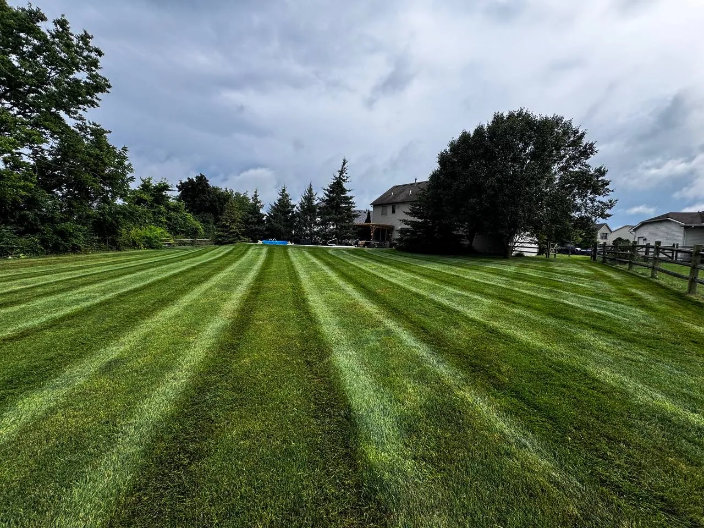

Home / Fall and Seasonal Cleanups
Fall + seasonal cleanups
Fall cleanups that get the whole property ready for winter.
Leaves cleared and hauled away, beds cut back the right way, shrubs shaped, and debris gone. Local crews for Toledo, Perrysburg, and Wood and Lucas County, with spring cleanups when the snow melts.
Before and after
From a leaf-buried yard to a clean lawn that is ready for winter.
A wooded Northwest Ohio property before and after a Terramorph fall cleanup.


What is included
Everything a fall cleanup should cover, in one scheduled visit.
Every property is different, so the estimate is built around what your lawn, beds, and trees actually need.
Fast free estimate
Request a Fall Cleanup Estimate
Share the service, property location, timeline, project notes, and photos in the secure form. The Terramorph team receives the request directly and can follow up with the right next step.
If the embedded form does not load, open the secure Jobber request form directly.
Open Jobber Quote Form Call 419-873-6801Built for big leaf loads
Commercial blowers and full crews for big leaf loads.
Northwest Ohio lots with mature oaks and maples drop a lot of leaves in a few weeks. Terramorph brings commercial walk-behind blowers and backpack crews, so big, wooded properties get cleared and cleaned up without dragging on for days.
- Leaves hauled away - no waiting on city curbside pickup
- Beds, fence lines, and under shrubs, not just the open lawn
- The property left clean, edged, and ready for winter

Northwest Ohio fall timeline
When each part of a fall cleanup should happen around Toledo.
Timing matters. Clean up too early and the trees drop another layer; wait too long and wet leaves freeze to the lawn under the first snow.
City leaf pickup has deadlines. Perrysburg's curbside leaf program ran October 20 to December 1 last year, and piles set out after the final pass were not collected. Terramorph hauls leaves away, so you are not racing a city schedule.
Done the right way
What a good fall cleanup leaves alone, and what it takes out.
A fast cleanup can still cost you next year's flowers or a healthy lawn. These are the rules Terramorph crews follow on Northwest Ohio properties.

Spring cleanups
When the snow melts, the spring cleanup picks up where fall left off.
Spring is the reset: whatever winter left behind comes out, and the plants that should be pruned early in the year get handled at the right time.
- Winter debris, sticks, and matted leaves cleared out
- Grasses and perennials left standing over winter cut back
- Beds cleaned, weeded, and edged
- Late-winter pruning for panicle and smooth hydrangea, butterfly bush, and rose of Sharon
- Mulch refresh and a clean start for mowing season
Cleanup photos
Real Terramorph cleanups across Wood and Lucas County.



Questions homeowners ask
Quick answers before you request an estimate.
Keep reading
Seasonal guides for Northwest Ohio properties.
Fall Cleanup Checklist for Northwest Ohio Properties
What to clear, cut back, and leave standing before winter.
Read more →Seasonal guideSpring Cleanup Checklist for Northwest Ohio Properties
The spring reset that gets beds and lawns ready for the season.
Read more →Cost guideSpring Cleanup Cost in Toledo and Northwest Ohio
What changes the price of a seasonal cleanup.
Read more →Winter serviceSeasonal Snow Removal
Book winter service now and the property is covered from fall into snow season.
Read more →Why homeowners trust Terramorph
Local outdoor work backed by reviews, project photos, and clear next steps.
Customer feedback, BBB accreditation, completed-work photos, and Northwest Ohio experience give homeowners useful context before requesting an estimate.
★★★★★“Great, professional group of guys!”
— Josh Johnson
★★★★★“Professional and awesome people.”
— Jennifer Nagy Lake
★★★★★“We are absolutely thrilled with the work Brad and his team completed! They completely redesigned our flower beds, providing us with a potential layout drawing, guiding us in selecting the right flowers, and executing everything perfectly. Besides the excellent craftsmanship, Brad and his team are genuinely kind and considerate.”
— Kate Vallerand
Fast free estimate
Request a Seasonal Cleanup Quote
Use the request form to send Terramorph the basics first, or call directly if the project is urgent.
Best next step
Send the project details, then Terramorph can follow up.
The quote page asks for name, phone, city, address, service type, timeline, and project notes so the crew has enough context before the first call.
- Good for landscaping, patios, drainage, lighting, cleanups, maintenance, and snow service.
- Works on mobile so homeowners can text the request details directly.
- Call 419-873-6801 anytime for urgent property issues or scheduling questions.
Why homeowners reach out
Crews that show up, clean up, and haul it all away.
★★★★★“We had a crew out to clean out some very overgrown and junk filled corners of the yard. They did great and were friendly and efficient. Would definitely hire them again.”
— Nat B
★★★★★“The tree the guys at Terramorph took down was quite tall and located close to my pool. They removed the tree without dropping a ton of tree into my pool. I highly recommend this company and will use them again.”
— Jennifer Tierney
★★★★★“Bravo to the young men who took care of my mother’s yard. Thank you so much. Mom is really happy.”
— Patrick Walker